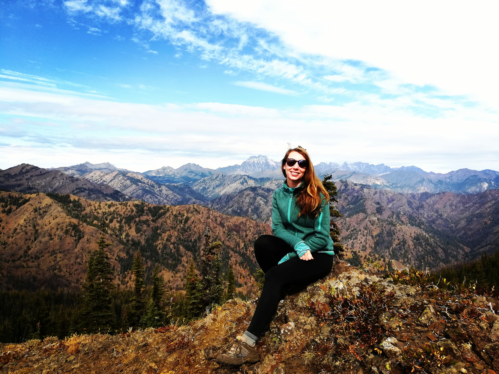

Lela Smith
Portfolio

Projects
- Dog-Blog
- My very first web page about my dog Annie. Practiced spacing and indentation and pushing to github. HTML.
- Cupcake-disaster
- Web page about a new and exciting Cupcake shop opening up in Enumclaw, WA. Practiced styling text. Also practiced READMEs and branching. HTML & CSS.
- Portugal
- Created two web pages about about my trip to Portugal. Practiced styling. HTML & CSS.
- VeronikaMoney
- Blog for new interior designer, Veronika Money. Practiced implementing the box model in code. HTML & CSS.
- favband
- Blog about Cher. Practiced using floats. HTML & CSS.
- about-me
- Blog about epicodus student Paula. Practiced divs and spans. HTML & CSS.
- animalshelter
- Web page about animal shelter. Practice inheritance and casading styles. HTML & CSS.
- VacationSite
Web page about a vacation destination, Cuba. Practiced working with Bootstrap. HTML, CSS & Bootstrap.
About Me
Paralegal at the Allen Institute
UNIVERSITY OF WASHINGTON, B.A. Political Science 2011
Motivation
I have always wanted to learn hot to program to create web-pages to showcase my photography and short story writing. While this is a hobby for now, I am very interested in front-end deveopment and web design while I explore a possible career in user experience design. Learning how to code has been a fun experience and I can't wait to continue my coding journey.
Interests
Traveling, photography, hiking/backpacking, eating new and interesting foods, rock climbing, going to the cinema, and spending time with loved ones.